15 найвідоміших українців у світі: нам є чим пишатися
12 Вересня 2022, 16:13| Україна
Безсумнівно, Україна — земля, багата талантами. Безліч відомих всьому світові великих художників, композиторів, акторів, спортсменів, політиків, вчених народилися в Україні або в них є українське коріння
1. Макс Левчин
Співзасновник PayPal. Інформатик і підприємець родом з України. У 1991 році він переїхав до США зі своєю родиною в пошуках політичного притулку і осів у Чикаго, Іллінойс. PayPal Inc. вийшла на відкритий ринок у лютому 2002 р і потім була придбана eBay. У 2004 р Левчин запустивши стартап Slide, сервіс спільного використання медіафайлів для соціальних мереж MySpace і Facebook. У серпні 2010 р Google придбала компанію Slide за $ 182 млн.
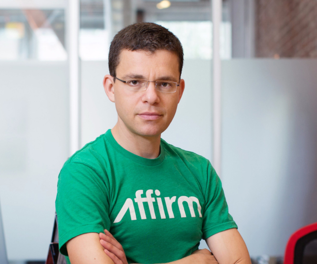2. Іван Піддубний
Знаменитий український борець народився в сім'ї запорізьких козаків у селі біля Полтави. Піддубний 7 років працював портовим вантажником у Севастополі і Феодосії, а в 1898 р почав виступати на аренах цирків.
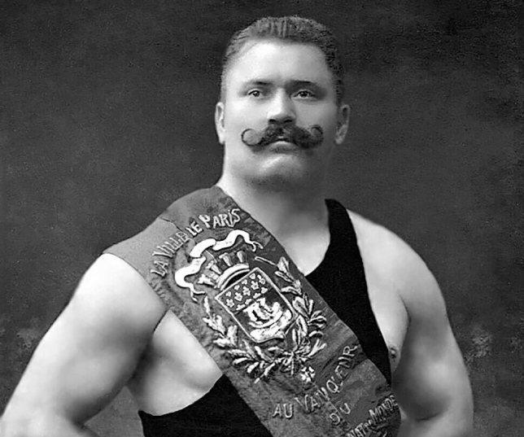3. Віталій та Володимир Клічко
Віталій Кличко, чинній чемпіон світу з боксу у важкій вазі за версією WBC, володіє найвищим відсотком (95%) здобутих перемог нокаутом. Його молодший брат Володимир Кличко володіє титулом чемпіона світу з боксу у важкій вазі за версією IBF, WBO, IBO і журналу Ring Magazine.
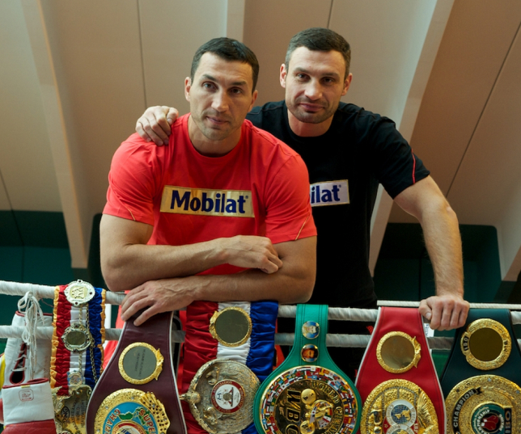4. Василь Вірастюк
У 2003 році він зайняв третє місце у змаганні «Найсильніша людина планети», а вже в 2004 р виграв титул найсильнішого.
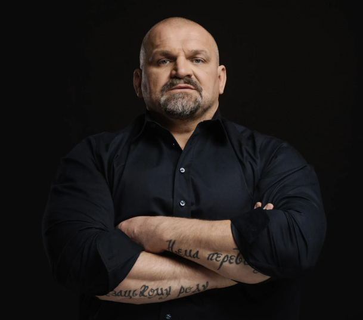5. Андрій Шевченко
Футболіст, який виступає за «Динамо Київ» і національну збірну в якості бомбардира. Він займає третє місце в списку кращих бомбардирів (63 голоти) в історії європейських турнірів після Філіппо Індзагі і Рауля. Серед найпрестижніших нагород Андрія — «Золотий м'яч» 2004 року (крім нього, цього призу удостоїлися українці Олег Блохін та Ігор Бєланов) і перемога в Лізі чемпіонів УЄФА (2003 р) у складі «Мілана».
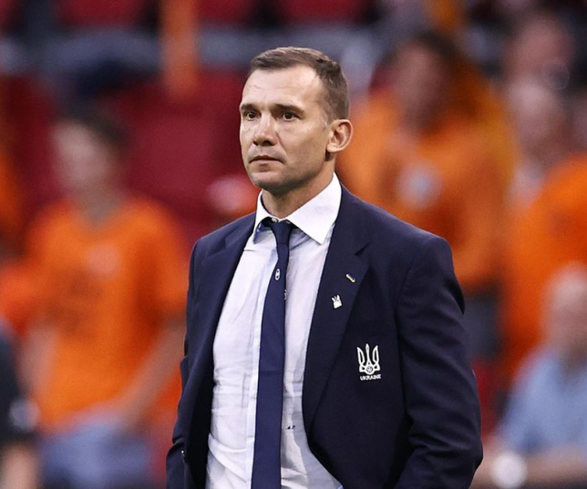6. Сергій Бубка
Відомий спортсмен зі стрибків з жердиною Бубка переміг на шести чемпіонатах світу IAAF, завоював олімпійське «золото» і 35 разів встановлював світові рекорди. Він — перший, хто стрибнув вище 6 метрів і єдиний, хто стрибнув вище 6.10 метрів.
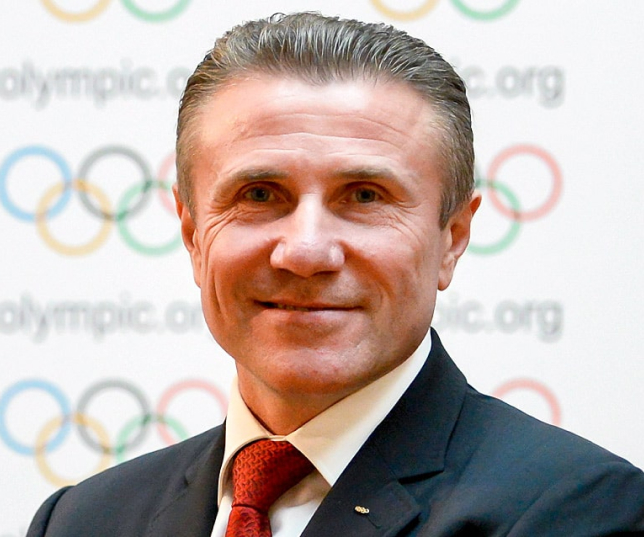7. Соломія Крушельницька
Одна з найталановитіших українських оперних співачок (сопрано).
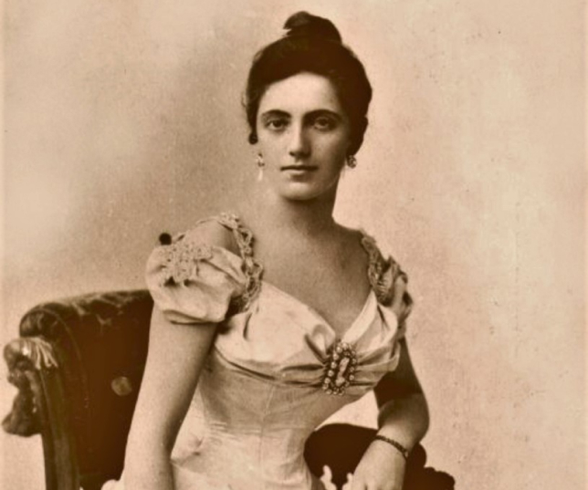8. Лілія Подкопаєва
Гімнастка, що стала абсолютною чемпіонкою Олімпійських ігор в 1996 р, чемпіонкою світу зі спортивної гімнастики у 1995 р и абсолютною чемпіонкою Європи в 1996 р Вважається однією з кращих гімнасток в історії.
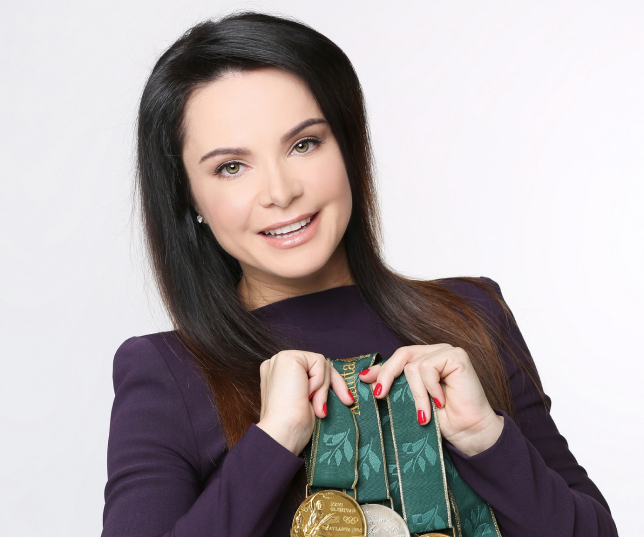9. Богдан Ступка
Найвідомішій український актор. Зіграв прежде 100 ролей у фільмах и более 50 в театрі.
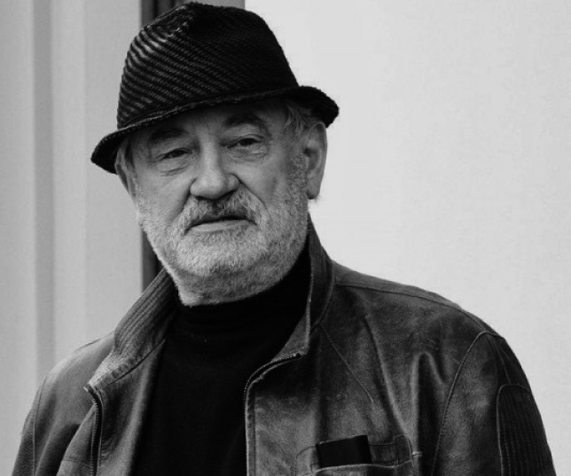10. Ганна Безсонова
У 2007 році Безсонова стала абсолютною чемпіонкою світу з художньої гімнастики в місті Патри. У 2004 р стала бронзовим призером Олімпіади в Афінах. До теперішнього часу в її колекції знаходиться 24 медалі чемпіонатів світу, 2 олімпійські медалі, 24 медалі чемпіонатів Європи та 10 медалей Кубка світу.
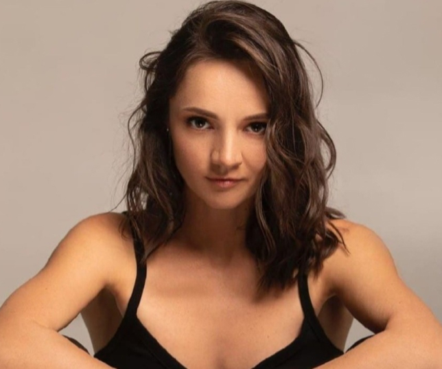11. Олег Скрипка
Український музикант, вокаліст, композитор, лідер гурту «Воплі Відоплясова», художній керівник етнофестивалю «Країна мрій».
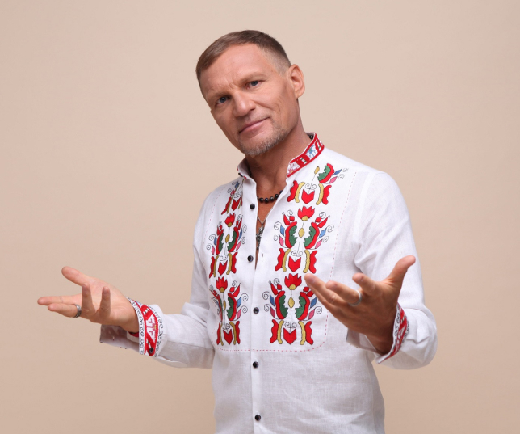12. Яна Клочкова
Українська плавчиня, що виграла п'ять олімпійських медалей, у тому числі чотири золотих (у запливі комплексного плавання на 200 м і 400 м на літніх Олімпійських іграх 2000 і 2007 рр.). У 2004 році Яна визнана кращою плавчихою світу.
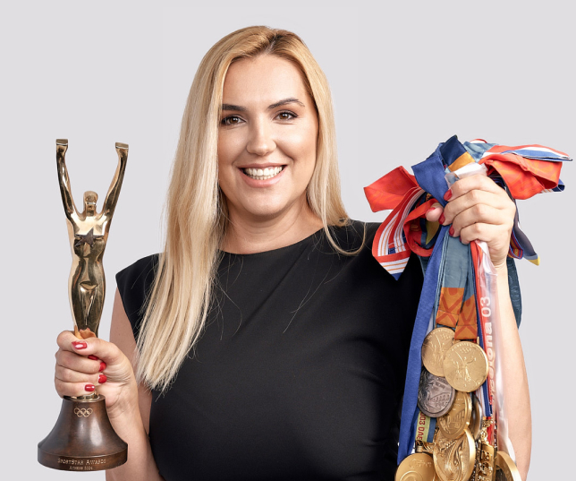13. Ганна Ушеніна
З грудня 2012 року є 14-ю чемпіонкою світу з шахів. У 2012 р на Чемпіонаті світу серед жінок виграла шахову корону, обігравши у фіналі Антоанетту Стефанову. Крім того, у 2013 році збірна України вперше в історії виграла «золото» на командному чемпіонаті світу FIDE серед жінок (Катерина Лагно, Ганна Ушеніна, Марія Музичук, Наталія Жукова та Інна Яновська—Гапоненко).
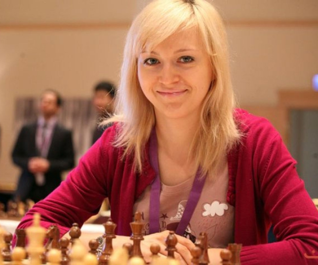14. Квітка Цісик
Американська оперна співачка (сопрано) українського походження. Зробив успішну кар'єру в 4різних музичних жанрах: популярна музика, класична опера, українська народна музика ірекламні джингли для ТБ і радіо.
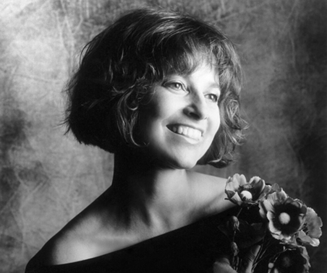15. Юджин Мельник
Канадський бізнесмен українського походження, власник професійного хокейного клубу «Ottawa Senators», що грає в НХЛ. Колишній керуючий фармацевтичної компанії «Biovail Corporation» і колишній власник фірми «Trimel Corporation».
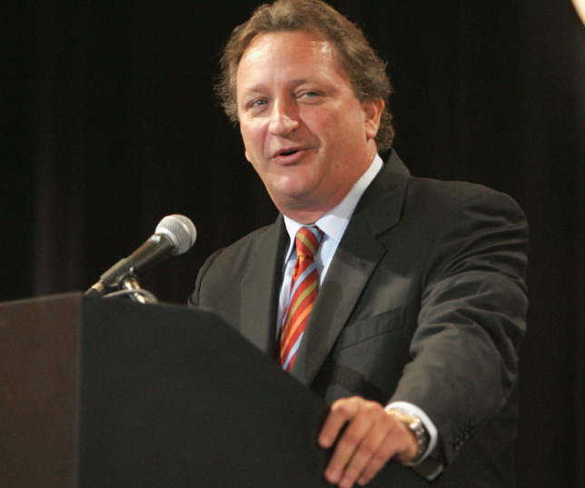